Manastırı (Hagios Georgios tou Kremnou) kasabanın güney sahilinde (Büyükada’ya bakan yamaç), Deniz Lisesi Ordu Evi’nin hemen ötesinde bulunan pembe renkli bir komplekstir. Manastırın adında geçen "tou Kremnou" ya da "uçurumdaki" unvanı, yapının, denize bakan bir uçuruma kurulmuş olmasından kaynaklanır. Mavi Marmara’nın üzerinde, manastırın büyüleyici binalarını kuşatan çamlar, serviler ve başka ağaçlarla dolu ortam oldukça güzeldir; Ege’deki Yunan adalarını hatırlatan bir manzarayla karşılaşırsınız burada.Manastırın 1583-93 arasında inşa edildiği düşünülmektedir.
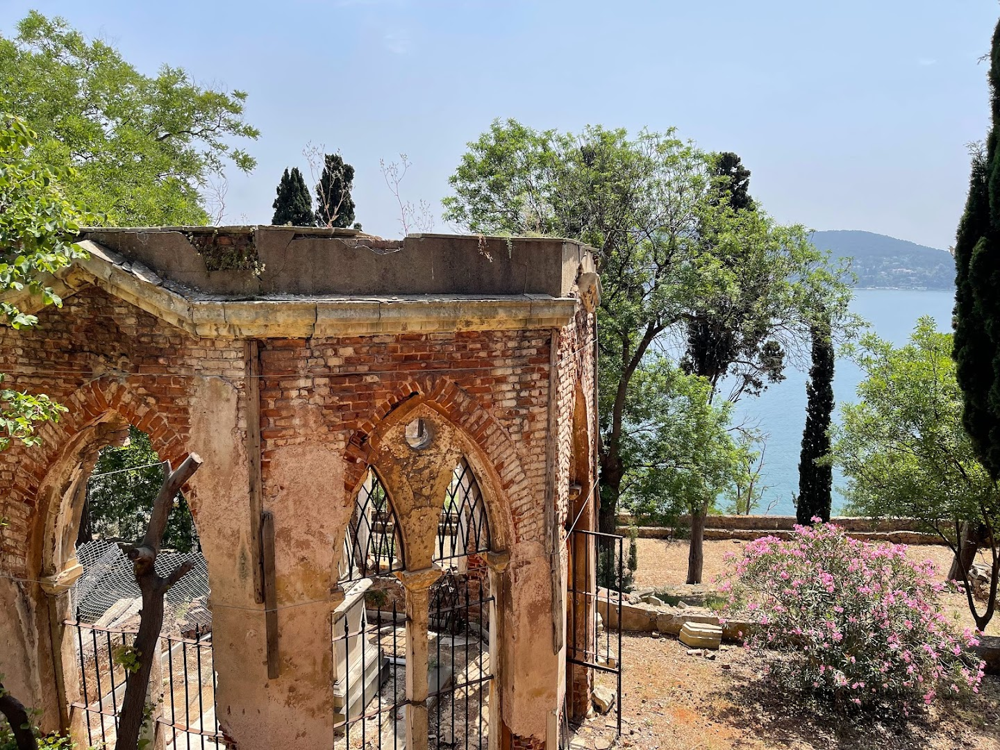Sait Faik Abasıyanık (1906–1954) ünlü bir kısa öykü yazardıydı. Ölümünden sonra evi müzeye dönüştürüldü. Yaşamı sırasında, anne ve babasız çocukların eğitimine destek olmak amacıyla evini Darüşşafaka Derneği'ne bağışladı. Ölümünden beş yıl sonra, 1959'da Darüşşafaka müzenin sorumluluğunu üstlendi. Müze 22 Ağustos 1959'da açıldı. 2009 yılında müze binasının restorasyonu yapıldı ve 11 Mayıs 2013 tarihinde ziyarete açıldı. Bina bodrum kat, zemin kat ve iki üst kattan oluşmaktadır. Okuma odası ve slayt gösterisi odası bodrum katındadır. Yemek ve misafir odası zemin kattadır. Yatak odası ve okuma odası ile yaşam öyküsü için ayrılmış iki oda birinci katta. Burgazada ve zarf odası ile ilgili eserler ise ikinci katta yer almaktadır.
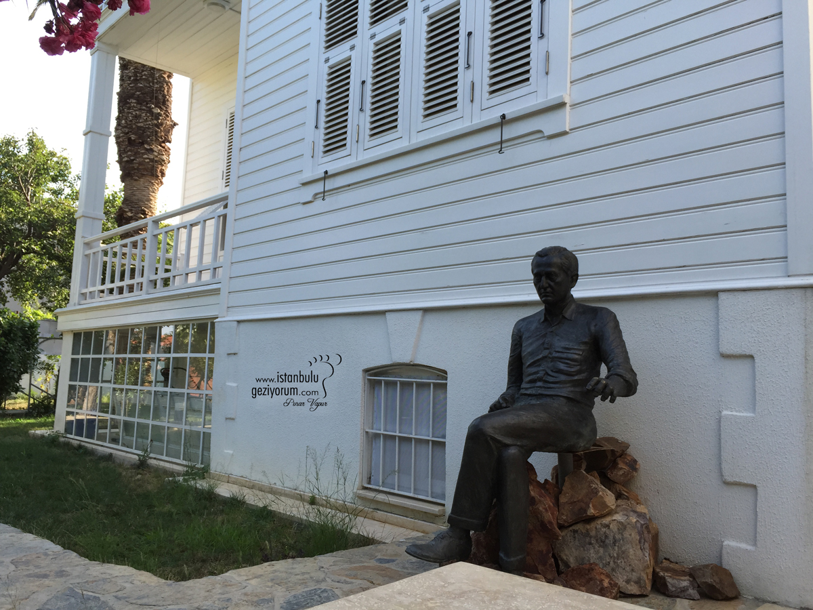Heybeliada’da 1844 yılında kurulan okul Ada'nın kuzeybatısında Ümit Tepesi'nde bulunur. Bu alandaki ilk okullardan biri olan ve 1971 yılında kapatılan okulun yeniden açılıp açılmamasıyla ilgili tartışmalar hala devam ediyor.
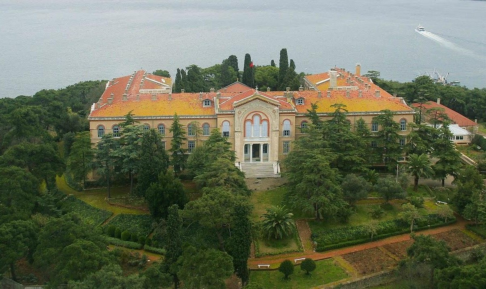Burgazadası'nın bu güzel manzaralı koyunu ve aynı isimli restoranını ziyaret edip,serin su ile ferahlayıp günbatımına doğru muhteşem yemeklerle karnınızı doyurabilirsiniz
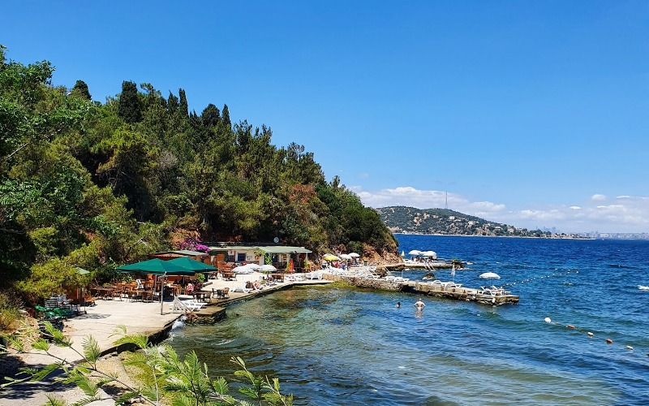 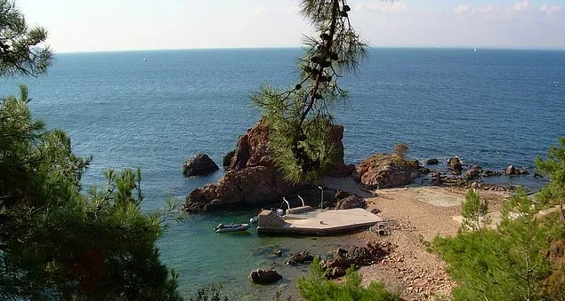Hagios Sotiros Christou Manastırı’na giden ormanlık yolda, Büyükada’nın ve Avrupa’nın en büyük dünyanın ise ikinci büyük ahşap yapısı Rum Yetimhanesi‘i var. 1964 yılından beri kullanılmadığından oldukça atıl kalmış hatta neredeyse yıkıldı yıkılacak. Zaten etrafını da çevirmişler, çok da birşey göremiyorsunuz. Bu sebeplerden ötürü boşuna bi ton da buranın yolunu pedellamayın, şimdilik atlayın. 1980’deki yangıda büyük hasar gören ve kötü hava koşulları nedeniyle de bir hayli yıpranan bina için geçtiğimiz mart ayında güzel haber geldi. Rum Yetimhanesi, Avrupa’daki tehlike altındaki 7 kültürel miras alanından biri seçildi. Böylece, bugüne kadar daha önce yapılmamış, Avrupa fonlu bir koruma çalışması da başlatılmış olacak. Bir gün açıldığında gelirsiniz.
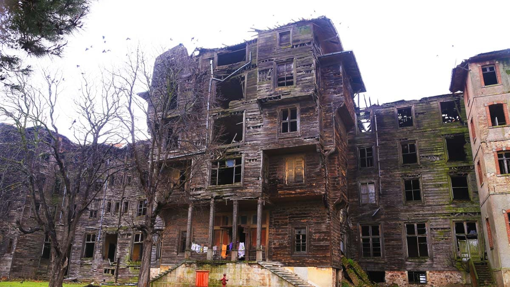Büyükada'ya ziyarete gelenler ilk başta bu kiliseyi görmeye gelmektedir. Kilise gerçekten de muhteşem manzarası ile görenleri hayran bırakmaktadır. Kilise binlerce yıllık bir tarihe sahiptir. Özellikle son yıllarda pek çok ziyaretçi bu kiliseyi görmeye gelmektedir. Aya Yorgi Kilisesine çıkan dik bir yokuş bulunmaktadır. Bu yokuş oldukça yorucudur. Yokuşu tırmanırken biraz zorlanmanız mümkündür. 15 dakikalık zorlu yolculuktan sonra kiliseye ulaşabilirsiniz. Kilisenin muhteşem güzelliğini gördüğünüz zaman o yokuşu tırmandığınız için asla pişman olmazsınız. Aya Yorgi Kilisesi içerisinde pek çok resim vardır. Bu resimler ile ilgili bilgileri girişteki katalogdan okuyarak öğrenebilirsiniz.
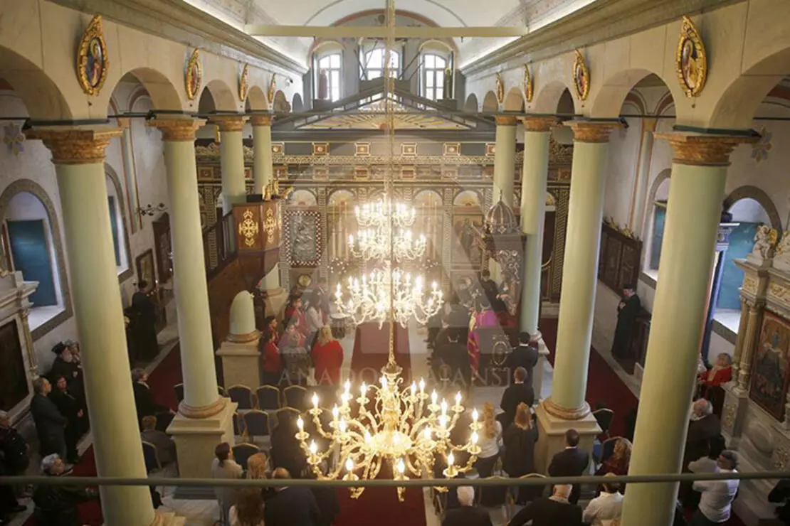Büyükada’ya gidip de burada dondurma yemeden dönmek hayatta olmaz.
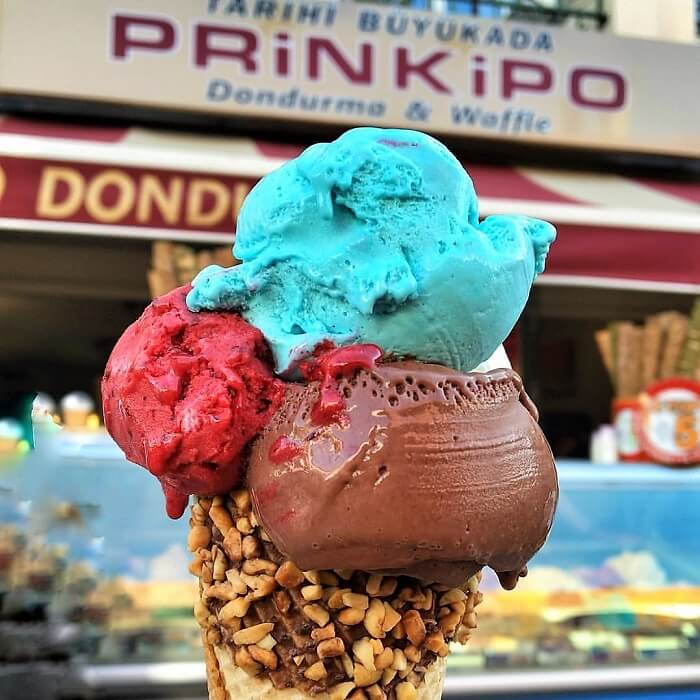Aziz Nikola Rum Ortodoks Kilisesi (Hagios Nikolaos), kasabanın ana meydanına egemendir. Kilise, neredeyse tüm erkeklerin denizci ya da balıkçı oldukları bir adaya uygun olarak, denizcilerin koruyucu azizi olan Aziz Nikola’ya adanmış bir Bizans kilisesinin yıkıntıları üzerine 1857 yılında kurulmuştur. Yapının mimarı Hacı Stefani Gaytanki Kalfa’dır. Kilise 1894’teki depremde hasar görmüştür; ancak kısa süre sonra onarılmıştır. Kilise, merkezi kaplayan yüksek bir silindirin tepesine örtülmüş kubbesi, dört destek payandası, dört kolunun üstündeki beşik kemerleri (barrel-vaulted), ve ana yapıdan bağımsız olarak yükselen çan kulesi ile plan açısından haç şeklindedir. Sunağın altında, 1775’te ölen Piskopos I. Samuel’in mezarı bulunur. Narteks’in önündeki ayrı bir yapı ise Aziz Paraskevi’nin kutsal çeşmesine (Hagia Paraskevi) ev sahipliği yapar.
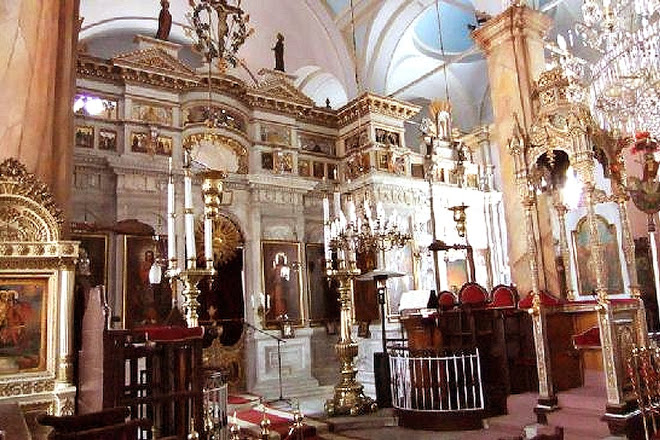 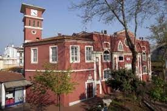Aya Nikola Hangarı’ndaki Adalar Müzesi’ndeki kalıcı sergilerden 10 Dakikada Prens Adaları adlı sergi hem çok derli toplu bir sergi, hem de adaların oluşumundan başlayarak günümüzün ada hayatına kadar çok kapsamlı bilgiler veriyor. Gerçek nostalji arayanlara bire bir. Pazartesi hariç her gün açık
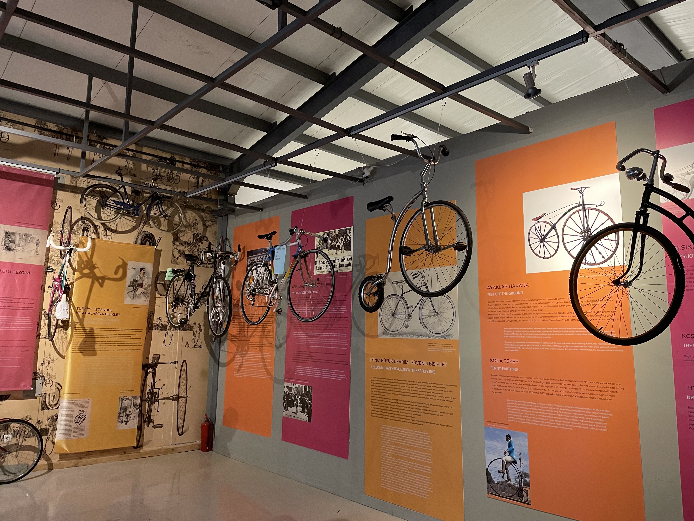 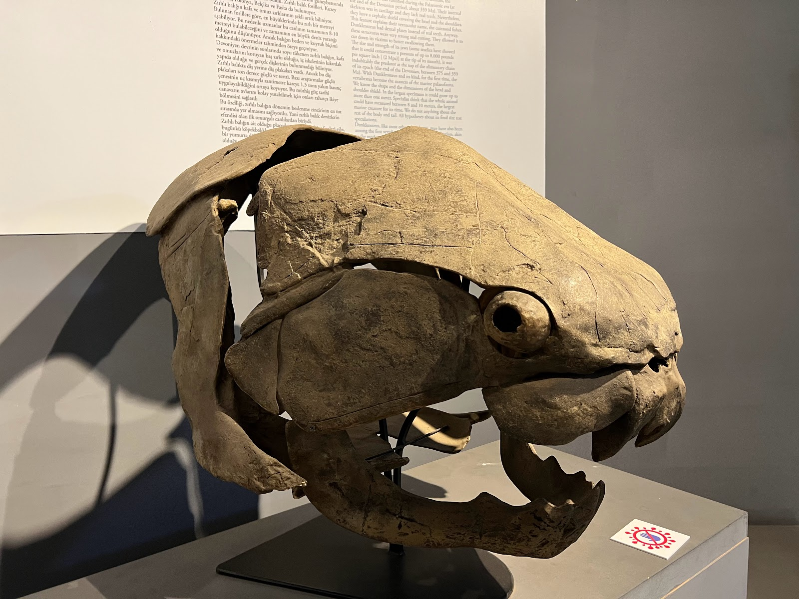Sedef Adası plajı 3000 m2 kapalı olmak üzere toplam 5000 m2′lik alan üzerinde hizmet veriyor. Plaj zemini beton olan tesisin güneşlenme alanında toplam 800 adet şezlongu bulunuyor.
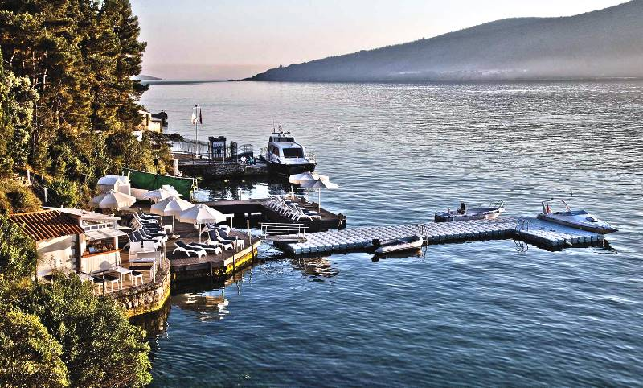Büyükadaya en çok motor seferleri var. Mavi Marmara‘nın motorları ile Beşiktaş, Kabataş, Eminönü, Yeşilköy, Kadıköy ve Bostancı’dan seferler var. Prens Tur’un ise Kartal’dan adalara seferleri var.
Şehir Hatları Vapurları‘nın ise Eminönü, Bostancı, Kadıköy’den vapur seferleri var. Yolculuk Avrupa Yakası’ndan Büyükadaya 1 saat 20 dakika kadar sürüyor. Bostancı’dan yarım saat, Kadıköy’den ise 1 saat sürüyor.